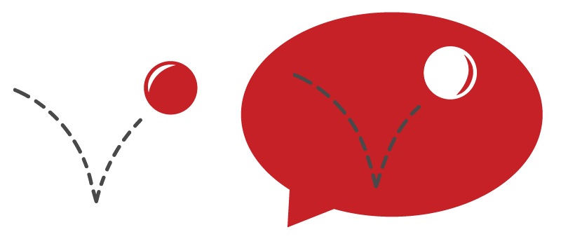
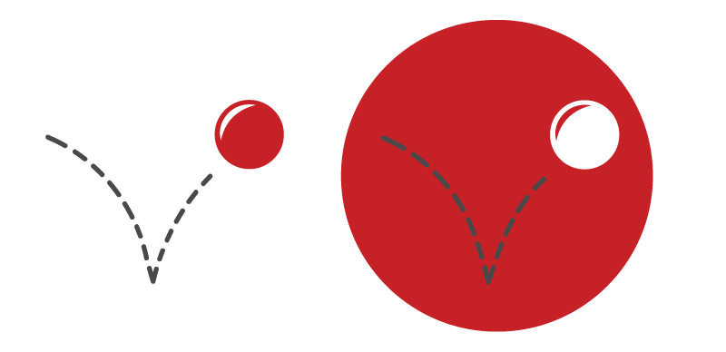
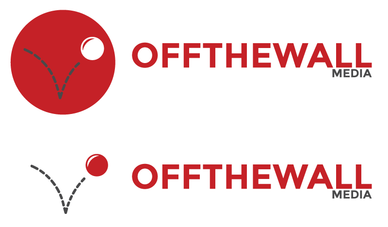

OffTheWall Media Redesign

First I decided to experiment with some custom typography. Working with the images that come to midn when i say 'media' which are a play button and speech bubble.

After experimenting with typography, I decided to take the meaning of Off The Wall and turn it into a logo. Again I tried to incorporate a speech bubble which would suggest 'media'.

I decided to remove the speech bubble and settled for a simple circle. I also fixed the reflection coming onto the ball to be more realistic.

Finally, I combined simple typography and the bouncing ball logo to form the new logo.

I also ended up designing some business cards just for fun with the new logo. Here is the back.
And here is what the front would look like.